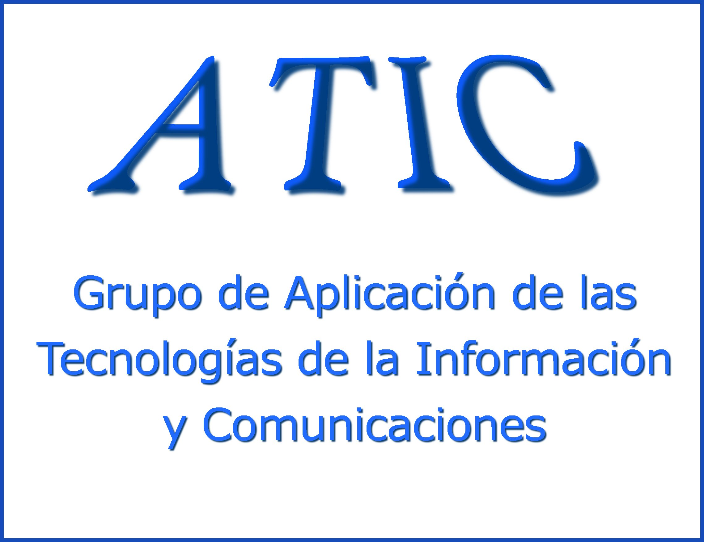
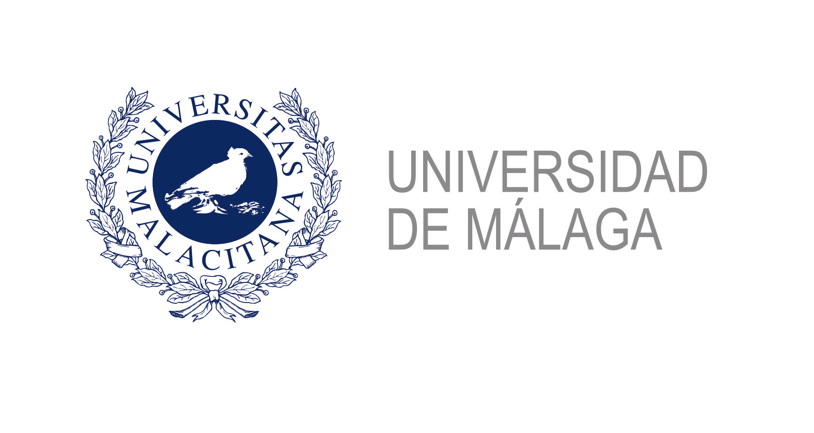
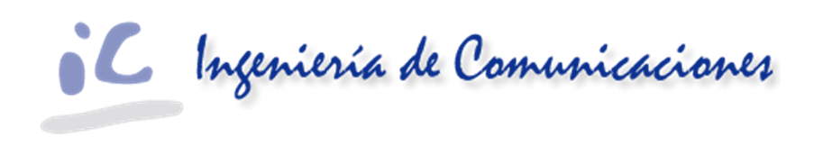
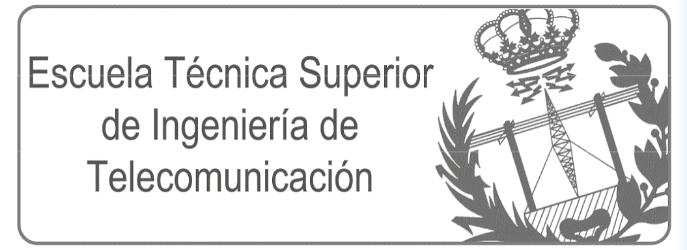
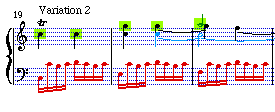
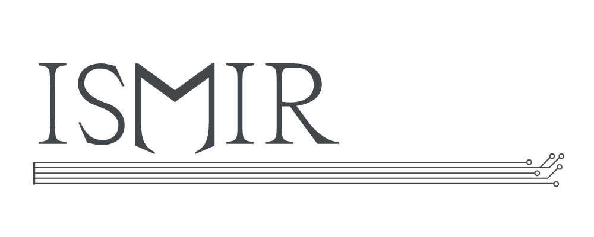
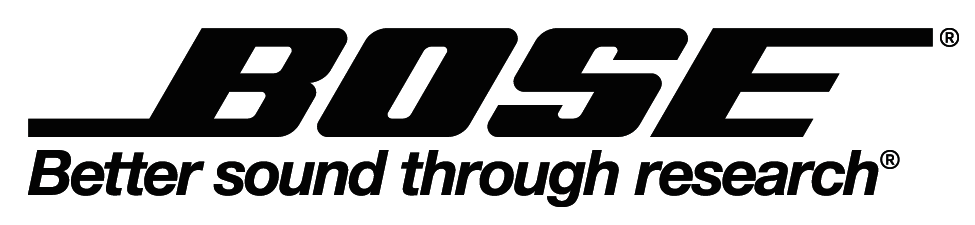
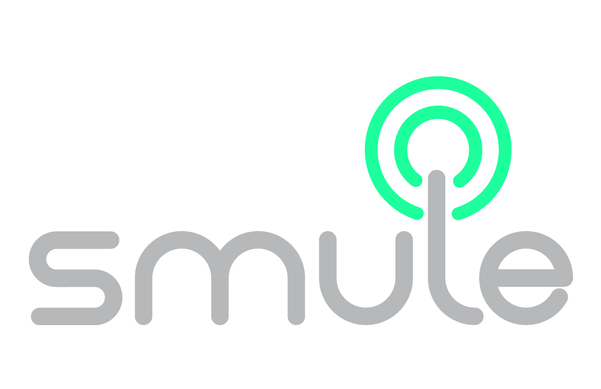
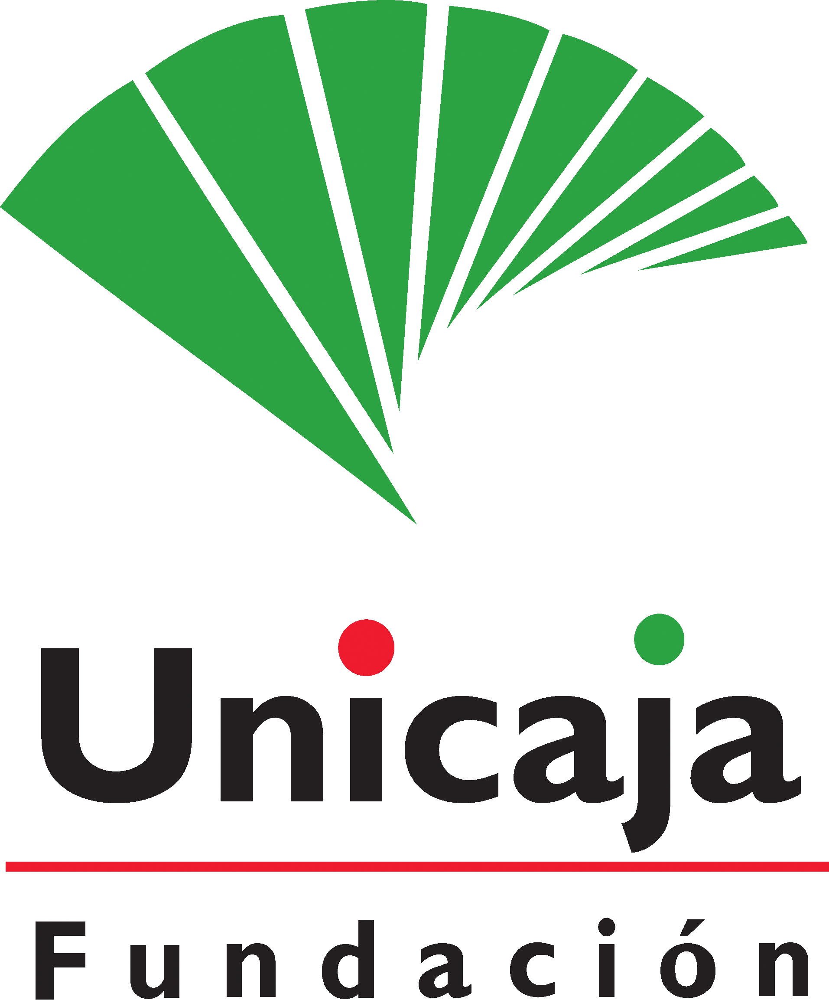

Welcome to ISMIR 2015
The 16th International Society for Music Information Retrieval Conference will take place in Malaga, Spain, October 26th-30th, 2015. This Conference is organized by the ATIC Research Group of the University of Malaga.
The annual Conference of the International Society for Music Information Retrieval (ISMIR) is the world's leading research forum on processing, analyzing, searching, organizing and accessing music-related data. Music becomes music after being processed by the human mind and each person perceives the music in a different and complex way. Therefore, this conference embraces the complexity and diversity of music by showcasing ideas and applications that aim to enhance the way in which we interact with music.
MIR is a truly interdisciplinary area, involving researchers, developers, educators, librarians, students and professionals from the disciplines of musicology, cognitive science, library and information science, computer science, electrical engineering and many others. Therefore, like previous ISMIR editions, ISMIR 2015 will provide a venue for the exchange of ideas, issues, results and perspectives among the different profiles of people working with music and computing in a broad sense. ISMIR 2015 will cover the entire area of MIR, providing ample room for diversity and new developments.
ISMIR 2015 will feature introductory and in-depth tutorials, presentations of research papers and posters as well as invited talks reflecting the true interdisciplinary nature of MIR research. In order to ensure the quality of the published papers at the conference, all the submitted papers are peer reviewed according to novelty, scholarly/scientific quality, appropriateness of topic, importance, readability and paper organization.
Along with that, ISMIR 2015 will provide the attendant with the possibility of discussing about the very latest and newest ideas that are just starting to come up. For that end, a special session for demonstrations and late-breaking news will be hosted, where neither results nor proof nor evaluations are required, just great, new, insightful ideas and demos will be expected. Additionally, ISMIR2015 will continue the recent trend of hosting an informal group discussion and brainstorming event, known as an "unconference" which offers the unique opportunity to foster engaging conversations and interactions among participants across a wide range of seniority and experience.
Finally, ISMIR 2015 will also include a musical programme. The aim of the concert programme is two-fold: to encourage the use of Music Information Retrieval (MIR) techniques in the creation of new music and to explore music that can suggest novel ideas for research in the MIR field.
Organization:
  
 
Sponsors:
Gold Sponsors

Silver Sponsors
Bronze Sponsors

Other collaborators
